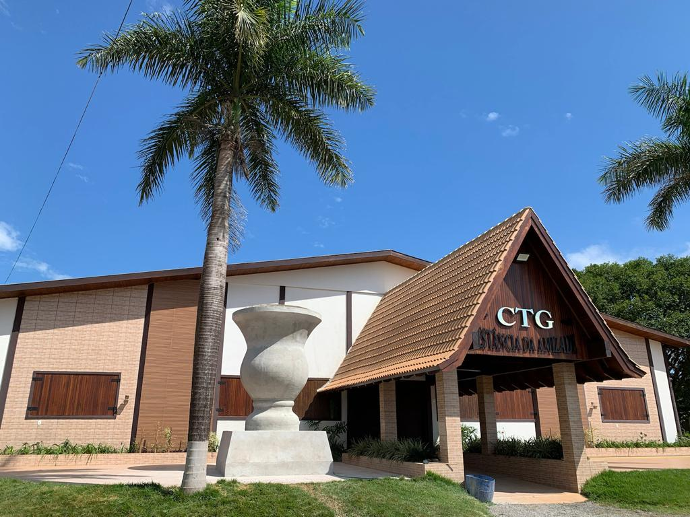

Bem-vindo ao CTG
O Centro de Tradições Gaúchas (CTG) é um local onde preservamos e celebramos a cultura gaúcha.
Nossa missão é promover as tradições, danças, músicas e valores do Rio Grande do Sul.

- Grupo Mirim (segunda|quarta|sexta) - 19h as 20h
- Grupo Juvenil (segunda|quarta|sexta) - 20h as 21h
- Grupo Adulto (segunda|quarta|sexta) - 21h as 22h
Horarios dos ensaios dos grupos: